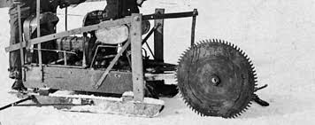
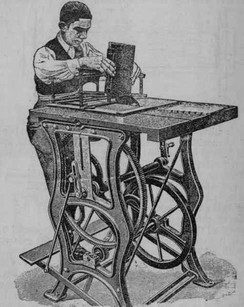

Invention of Circular Saw
Tabitha Babbitt was a weaver who was born into the Shaker community, which thrived off of the forest industry. One day she was watching two men using a pit saw (saw you pull back and forth) to cut down a tree. She noticed the saw wouldn't cut on the reverse pull, which meant they're doing double the work. She wanted to come up with a way to save all that wasted energy lost by using a pit saw. So, she came up with a prototype, later called the circular saw. She attached a circular blade to her spinning wheel, and using the pedal attached to the wheel to spin it, no energy was now wasted. Men were very surprised as how she could make a tool that was so useful. Some say she “might have become a professional inventor and patentee had she not been a Shaker”(Stanley, 1995). Shakers lived a very simple life, and Tabitha's goal out of her inventions was to make things easier for the men. Tabitha goes down as a woman in history that helped to better not only her quiet, little Shaker community, but the communities to come all over the world, whether she knew it or not. 